1INF · Laboratorio · mercoledì 04/11/2026 · si consegnano SEMPRE unit1.pas e lo screenshot
Ora 2 · Calcolatrice a 4 bottoni
الساعة 2 · آلة حاسبة بأربعة أزرار
第 2 节 · 四个按钮的计算器
La pagina viene aggiornata spesso durante la lezione: premi F5 per vedere la versione nuova. · اضغط F5 لرؤية النسخة الجديدة. · 按 F5 查看新版本。
Chi sei?
Scrivi nome e cognome: serve al cruscotto per vedere a che punto sei.
Percorso facilitato (se sei indietro): solo il bottone +
Fai solo il bottone +: componenti, codice, prova 7 più 5, screenshot e consegna.
افعل زر + فقط: المكونات والكود والتجربة ثم اللقطة والتسليم.
只做 + 按钮：组件、代码、试 7 加 5、截图和提交。
Sei bloccato? Scrivi la domanda nella casella dell'assistente in fondo alla pagina: ti risponde subito. Alza la mano solo se il PC non funziona (non si accende, niente rete, Lazarus non si apre).
إذا علقت، اكتب سؤالك في خانة المساعد أسفل الصفحة: يجيبك فوراً. ارفع يدك فقط إذا كان الحاسوب لا يعمل.
卡住了就在页面底部的助手框里写问题，它马上回答。只有电脑坏了才举手。
1Crea il progetto
أنشئ المشروع
新建项目
In Lazarus: menu Progetto → Nuovo progetto… → Applicazione → OK. Compare una finestra grigia (Form1). FATTO!
في Lazarus: Progetto ← Nuovo progetto… ← Applicazione ← OK. تظهر نافذة رمادية (Form1).
在 Lazarus 里：Progetto → Nuovo progetto… → Applicazione → OK。出现灰色窗口（Form1）。
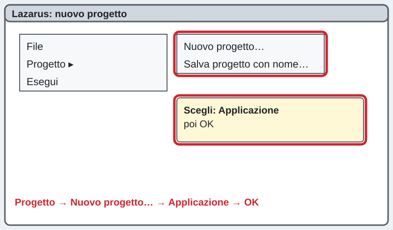
2Salva il progetto in Documenti
احفظ المشروع في Documenti
把项目保存到 Documenti
Menu Progetto → Salva progetto con nome…. Clicca Documenti, poi Nuova cartella e dai alla cartella il nome calcolatrice. Entra nella cartella e scrivi calcolatrice in Nome file, poi Salva; per unit1.pas clicca ancora Salva.
Progetto ← Salva progetto con nome… . اضغط Documenti ثم مجلد جديد باسم calcolatrice. ادخل المجلد واكتب calcolatrice ثم Salva (مرتين).
Progetto → Salva progetto con nome…。点 Documenti，新建文件夹，名字 calcolatrice。进入文件夹，文件名写 calcolatrice，点 Salva（两次）。
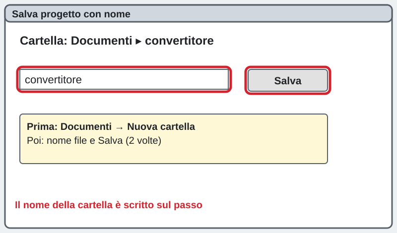
3Metti i componenti: 2 Edit, 4 bottoni, 1 Label
ضع المكونات: خانتا Edit و4 أزرار وLabel
放组件：2 个 Edit、4 个按钮、1 个 Label
Dalla palette Standard: due TEdit, quattro TButton e una TLabel. Cambia le Caption dei bottoni in +, -, *, /. Cancella il Text dei due Edit. FATTO!
من لوحة Standard: خانتا TEdit وأربعة TButton وTLabel. غيّر Caption الأزرار إلى + - * /. امسح Text في الخانتين.
从 Standard 面板放：两个 TEdit、四个 TButton、一个 TLabel。按钮的 Caption 改成 + - * /。清空两个 Edit 的 Text。
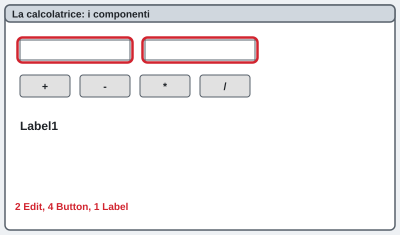
4Il bottone più: StrToIntDef
زر الجمع: StrToIntDef
加号按钮：StrToIntDef
Doppio clic sul bottone +. StrToIntDef(testo, 0) legge il numero e, se la casella è vuota o ci sono lettere, usa 0 invece di bloccarsi.
StrToIntDef يقرأ الرقم وإذا كانت الخانة فارغة أو فيها حروف يستعمل 0 بدل أن يتوقف.
StrToIntDef 读取数字；如果框是空的或有字母，就用 0，不会卡住。
procedure TForm1.Button1Click(Sender: TObject);
var
a, b: Integer;
begin
a := StrToIntDef(Edit1.Text, 0);
b := StrToIntDef(Edit2.Text, 0);
Label1.Caption := IntToStr(a) + ' più ' + IntToStr(b) + ' fa ' + IntToStr(a + b);
end;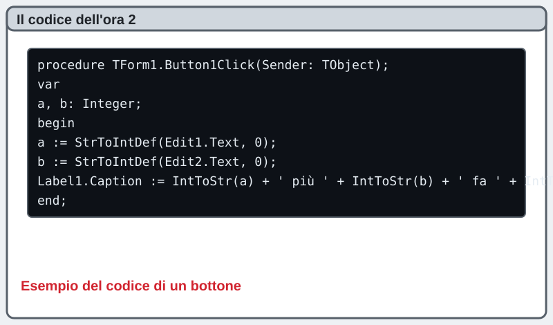
5Provalo: 7 più 5
جرّبه: 7 زائد 5
试试：7 加 5
Premi F9, scrivi 7 e 5, premi +: compare la frase 7 più 5 fa 12. FATTO!
اضغط F9 واكتب 7 و5 ثم +: تظهر الجملة 7 più 5 fa 12.
按 F9，写 7 和 5，按 +：出现句子 7 più 5 fa 12。
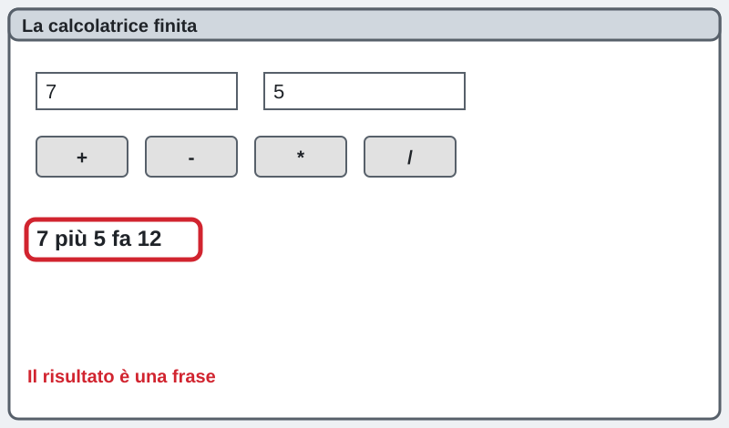
6Il bottone meno
زر الطرح
减号按钮
Doppio clic sul bottone −: Lazarus scrive da solo procedure TForm1.Button2Click. Il resto è uguale: cambia solo l'operazione e la parola.
نفس الطريقة: غيّر العملية والكلمة فقط.
同样的方法：只改运算和单词。
procedure TForm1.Button2Click(Sender: TObject);
var
a, b: Integer;
begin
a := StrToIntDef(Edit1.Text, 0);
b := StrToIntDef(Edit2.Text, 0);
Label1.Caption := IntToStr(a) + ' meno ' + IntToStr(b) + ' fa ' + IntToStr(a - b);
end;7Il bottone per
زر الضرب
乘号按钮
Doppio clic sul bottone *: compare Button3Click. Stesso metodo con *.
نفس الطريقة مع *.
同样的方法，用 *。
procedure TForm1.Button3Click(Sender: TObject);
var
a, b: Integer;
begin
a := StrToIntDef(Edit1.Text, 0);
b := StrToIntDef(Edit2.Text, 0);
Label1.Caption := IntToStr(a) + ' per ' + IntToStr(b) + ' fa ' + IntToStr(a * b);
end;8Il bottone diviso (bonus: zero)
زر القسمة (إضافي: الصفر)
除号按钮（加分：零）
Con i numeri interi si usa div. Con if controlli lo zero: non si può dividere per zero. Prova 8 e 0.
مع الأعداد الصحيحة نستعمل div. مع if نفحص الصفر: لا يمكن القسمة على صفر.
整数用 div。用 if 检查零：不能除以零。试 8 和 0。
procedure TForm1.Button4Click(Sender: TObject);
var
a, b: Integer;
begin
a := StrToIntDef(Edit1.Text, 0);
b := StrToIntDef(Edit2.Text, 0);
if b = 0 then
Label1.Caption := 'Non si può dividere per zero'
else
Label1.Caption := IntToStr(a) + ' diviso ' + IntToStr(b) + ' fa ' + IntToStr(a div b);
end;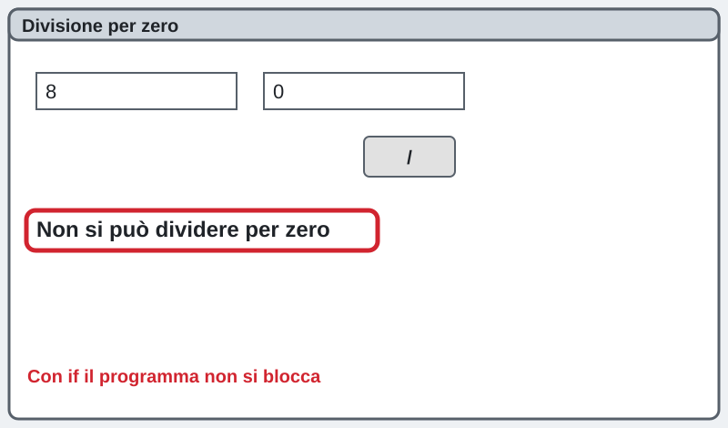
9Fallo tuo
اجعله لك
做成你自己的
Cambia titolo della finestra, colori e le frasi (per esempio «sommato a»). FATTO!
غيّر عنوان النافذة والألوان والجمل.
改窗口标题、颜色和句子。
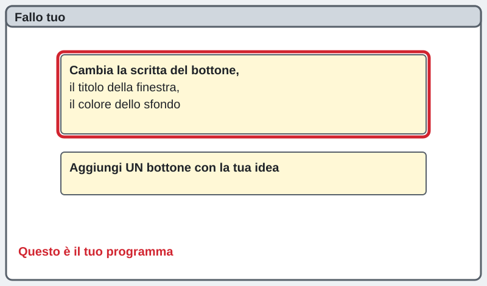
10Sul quaderno
في الدفتر
写在本子上
Ricopia sul quaderno il riquadro giallo.
انسخ المربع الأصفر في الدفتر.
把黄色框抄在本子上。
StrToIntDef(Edit1.Text, 0) = numero, se non va usa 0
IntToStr(a + b) = numero che diventa testo
if b = 0 then ... else ... = se... altrimenti...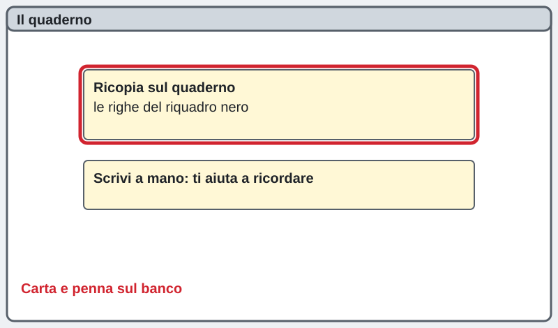
11Salva tutto
احفظ كل شيء
保存全部
Premi Ctrl + S. FATTO!
اضغط Ctrl + S. تمّ!
按 Ctrl + S。完成！
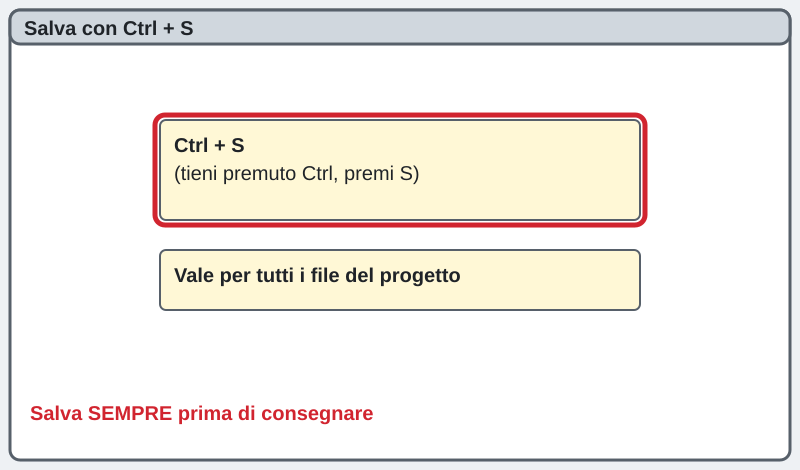
12Fai lo screenshot
التقط لقطة الشاشة
截图
Con il programma che gira premi Win + Shift + S, trascina sul programma, incolla in Paint e salva nella cartella del progetto con il nome ora2_screenshot.png.
والبرنامج يعمل اضغط Win + Shift + S، ثم الصقها في Paint واحفظها في مجلد المشروع باسم ora2_screenshot.png.
程序运行时按 Win + Shift + S，在 Paint 里粘贴，保存到项目文件夹，文件名 ora2_screenshot.png。
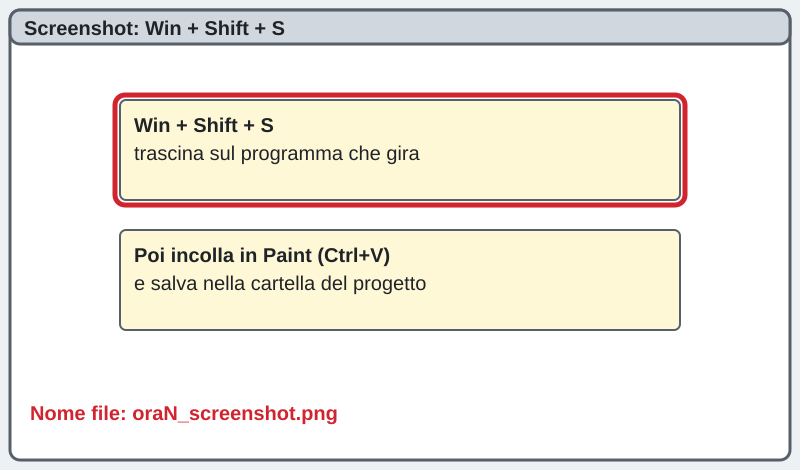
13Manda al prof
أرسل إلى الأستاذ
发给老师
Premi il bottone: scegli unit1.pas e lo screenshot e premi «Manda al prof». FATTO!
اضغط الزر: اختر unit1.pas ولقطة الشاشة ثم «Manda al prof».
按按钮：选择 unit1.pas 和截图，再按「Manda al prof」。
Manda al prof ora 2 · أرسل · 发送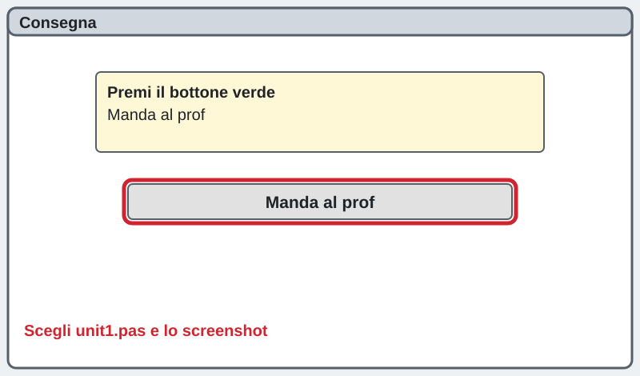
La pagina viene aggiornata spesso durante la lezione: premi F5 per vedere la versione nuova.